in Kanab, Utah.
Exploring the Central Rockies
I eventually got to Denver, and spent some time in the city seeing what was up. The short story is it's everything I imagined, but that's a story for another time. With the Grand Canyon trip beginning at Flagstaff on September 23, and tickets to see Greensky Bluegrass play Red Rocks on September 13 and 14, I had a week in between to explore the Central Rockies.
I posed the same question to many different Denver residents of various levels of outdoorsyness: if I were to live in a mountain town that had good mountain biking, fishing, and skiing, where should I stay? The same three cities kept coming up: Crested Butte, Telluride, and Steamboat Springs. There were other contenders, including Salida, Paonia, and Ouray.
I put a lot of time into planning an action packed week. I tried posting the highlights to my Instagram account along the way, but I saved the details for now. Here's how it went.
Vail
My first stop from Denver was the Vail valley. I have a friend there who was nice enough to let me crash on her couch, and it made sense as the entrypoint into the middle of the Rockies. I spent the morning of September 17 running last minute errands and packing the truck, and headed up the 70.
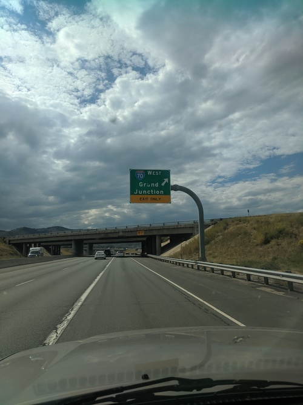
I arrived at the Vail valley in the afternoon, and did a short section of the North Trail to start getting into the swing of alpine mountain biking.
It was my kind of ride: a smooth, steady climb, followed by a smooth, flowy descent.
There was a nice meadow with excellent views of the valley with the Gore range in the back.
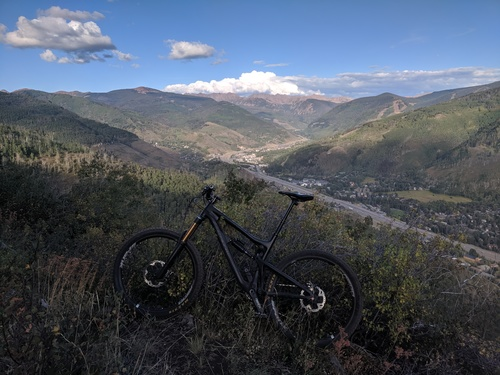
From there, the singletrack descended smoothly through aspens and back to the neighborhood. I rode the streets back to my truck, and headed to my friend's house.
We went to meet some of her coworkers at Vail Brewing Company. When we walked in, First Tube was playing, and they had a Split Open and Melt IPA on the menu. Great first impression. There was also a food truck serving up decent Mexican food.
After that, we headed back to her place, where I found out her roommate was a big fisherman. He agreed to take me out to Gore Creek in the morning.
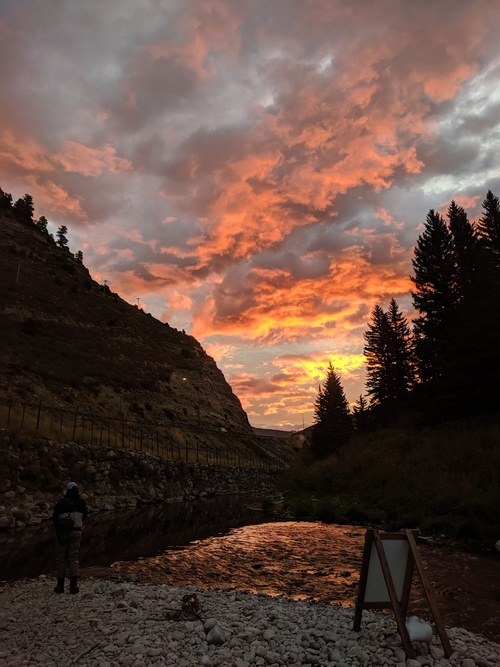
We fished a hole with a lot of decent trout. He got one, and I had one of my own but I lost him. All-in-all, it was a fine morning of fishing, and I got to try out my waders.
Back at the house, I took a shower, had a cup of coffee, and was on my way.
Salida
From Vail, I turned south down the 24, and headed towards Salida. It was a nice drive, with excellent views all the way down.
I had planned on staying a night in Salida, which is a known mountain biking spot with trailheads right in town, and good camping near the trails.
Unfortunately, recent rains had washed out the trails I wanted to ride, so I didn't stay long. I made myself a quick lunch at the town park, and headed on my way.
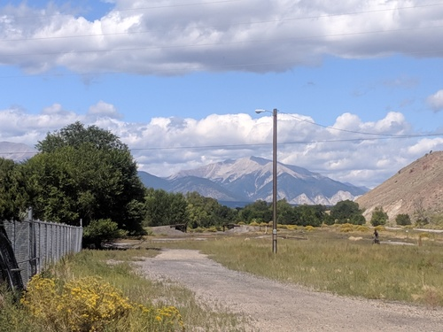
Crested Butte
The drive out to Crested Butte from Salida featured excellent views of the Collegiate mountains. Once you turn up the 135 in Gunnison, you enter a beautiful valley that terminates with Crested Butte.
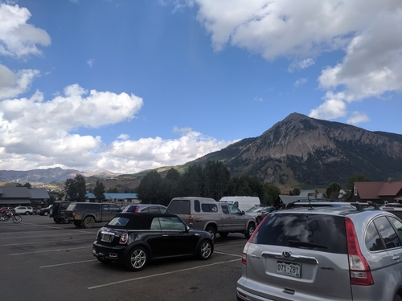
Since I didn't stay in Salida, I had two nights in Crested Butte. My plan was to fish and camp out the first night, then ride the 401 trail the second day and camp somewhere else.
I went to a local fly shop to stock up on flies and get some advice on where to fish. The woman at the counter gave me a whole lot of tips: the area around the Roaring Judy hatchery, Spring Creek, Taylor River, and probably some others I've forgotten.
I settled on the Taylor. There are Gold Medal trout waters just below the resevoir dam, but I didn't feel like fishing overcrowded waters hunting for a trophy. Instead, I took a tip from the fly shop and camped at the Cold Spring campground.
The road up the Taylor River is a fun, windy mountain road. It's also open cattle range.
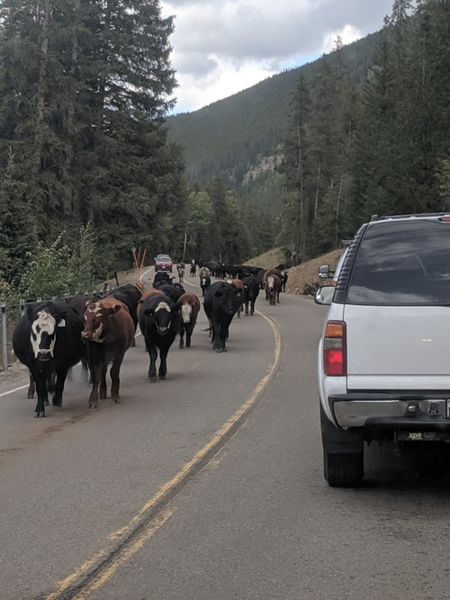
Once I got to the campground, I tested out a new tent I got for the Grand Canyon (there aren't a lot of truck or hammock spots).
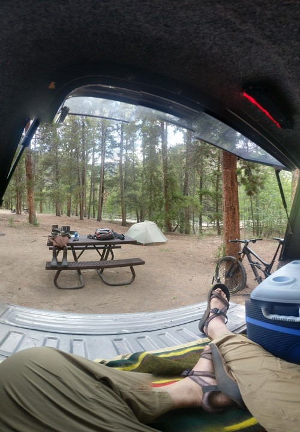
The campground sits between two river access points, and I had about an hour and a half to fish them both. The water flows around 350 cubic feet per second, and where I was there were quite a lot of medium sized boulders. I didn't feel super comfortable wading, and had trouble finding good pools to fish. I got skunked, but the time was well spent.
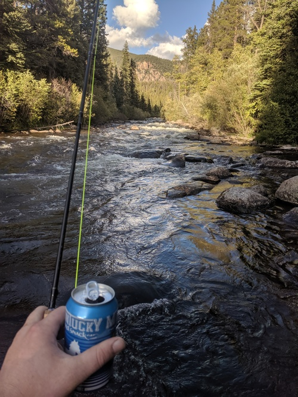
Back at camp, I made dinner and went to bed with the sun.
The next day, I headed back through town and up Gothic Road to ride the 401 trail.
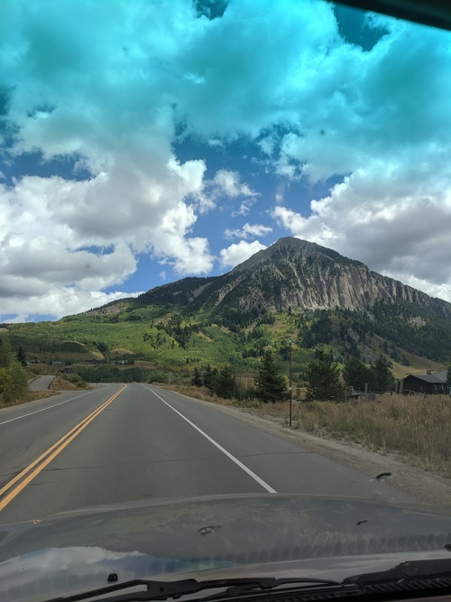
I scouted out the Gothic Campground, but was unimpressed. Instead, I drove straight to the Rustler's Gulch trailhead. This sits roughly midway through the 401 trail loop. I did the top section, skipping the bottom climb and descent after Rustler's Gulch in order to achieve my desired plan of all climbing followed by all descent.
The climb starts off with a couple miles of steady fire road. Gothic Road became Schofield Pass Road, but it was the same fire road.
Along the way, there is a perenniel patch of snow called The Plug. The snow on the road had all but melted, but there was a nice snowfield just below.
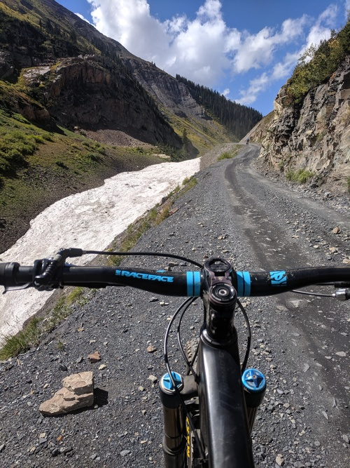
A little ways on, the road climbed past Emerald Lake.
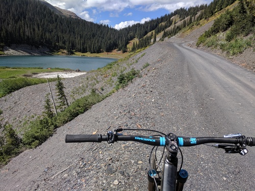
I don't always ride my bike uphill, but when I do, I want it to look like that.
Up at Schofield Pass, I stopped for a breather.
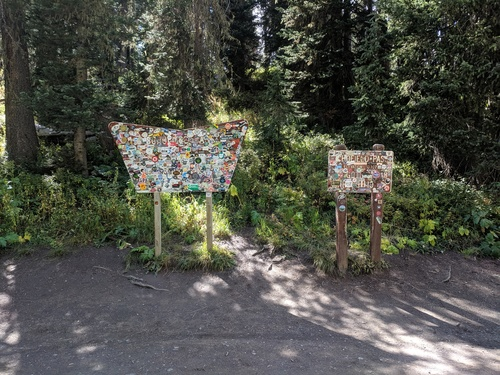
From there, the 401 trail begins with a little over a mile of hard but smooth singletrack climbing through a forest. After popping out, the trail gets a little easier, and winds up a gorgeous meadow with amazing views.
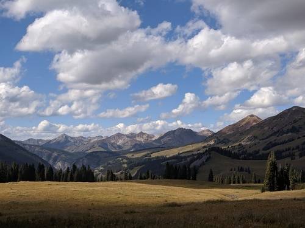
At the top, I talked with a couple other riders to get local tips about where to hang out in town.
After a drink and a snack, it was time for the descent.
The trail down was unreal. It hugs the hillside, with a fairly epic drop off to the right. I had a hard time deciding whether to rip the trail or take it slow and enjoy the views. Neither pictures nor words can describe the views of the valley, with Avery Peak, White Mountain, and Crested Butte in the background.
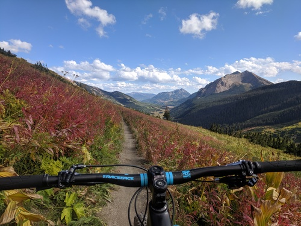
After ripping down the hillside of Snodgrass Mountain, the trail turns through forest back into Rustler's Gulch and becomes a more technical downhill.
At one point, I asked myself why I wasn't smiling. This put a smile on my face, and I stopped worrying about the brakes. I got going pretty good through a decent rock and root section, and I realized I was in full-face territory. At this point I was going too fast to slow down, but I ripped through a turn and was able to scrub speed.
I rode very late in the season, and a lot of sections had been chewed up by people skidding their rear wheel. I know this because people who skid their front wheel are crashing. Otherwise, it was an excellent alpine mountain bike ride, as advertised.
Back at the truck, I tried to decide what to do that night. I wanted to hit the bar that the locals had mentioned, but I didn't want to drive after that, and I wasn't sure about sleeping in the truck in town.
Instead, I opted to drive back up to Emerald Lake and camp there. It's a gorgeous alpine lake, sitting at 11,457 feet.
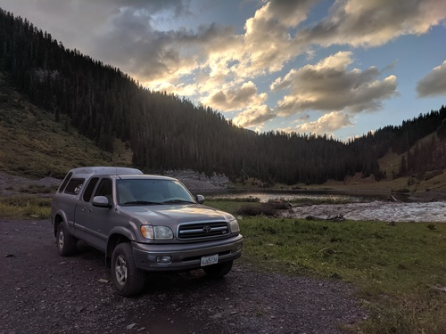
I had some time before sunset, so I tossed some spoons in the lake. I didn't see any fish rising, but I could see guppies swimming close by the bank. I didn't have any luck, but you know what they say about a bad day of fishing.
It got windy as the sun set, so I made a quick dinner and went to bed.
The Crested Butte area seems like an excellent place: tons of National Forest, dozens of good fishing streams and lakes, and excellent mountain bike trails. I didn't make it up to the ski resort, but it looks awesome. My only reservation about living there is whether they attract the kind of live music I'd want to see. There are apparently shows at the mountain and the local bars, but I don't think there is a venue there that will attract the acts I'm interested in.
Paonia, Delta, and Montrose
My plan for the next day was to drive over Kebler Pass on the dirt road from Crested Butte, down through Paonia and Delta, and over to Montrose before heading up to the Black Canyon National Park.
Kebler Pass was an awesome road, with excellent views. The aspens were just starting to turn colors.
I'd gotten a tip from a guy at a bar to check out Paonia. It sits right up against the Rockies at the edge of the Western Slope, and it's apparently good farming. I stopped for gas there, and it turned out to be a quaint little Western Slope town. Not a whole lot going on, but if you're looking for farmland out there, it would be a great spot.
From Paonia, I continued on to Delta, another little Western Slope town. There, I picked up the 50, and took that in to Montrose. That basically completed the loop from Crested Butte: if you continue past Montrose, you'll get back to Gunnison.
In town, I went to the local fly shop to buy a couple flies and get some fishing tips for the Black Canyon. I was planning on heading down into the canyon within the National Park, but the guy at the fly shop recommended fishing elsewhere. He said there were a couple good routes: the Duncan Road route is a crazy steep and difficult hike, and the Ute Road route is more gradual but longer. He also mentioned Chukar Road as the entrypoint for floating that section of the Gunnison, and East Portal Road for drive up camping and fishing.
I ended up sticking with the original plan: hike down the "easy" Gunnison route, which descends right from the South Rim Visitor Center.
Black Canyon of the Gunnison River
Once I got to the Visitor Center, I obtained a mandatory permit to head into the canyon. They are free and unlimited; it's mainly so the rangers know who to look for if you don't make it out. This was a trend I noticed around the Black Canyon: people use words like "survive" and "death" a lot. It's also bear country, and I had to check out a loaner bear can.
The views from the top were amazing. They call it Colorado's Grand Canyon.
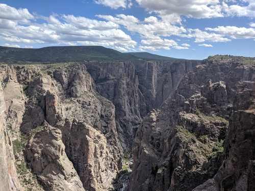
The "easy" hike was probably the hardest scramble I've done with a fully loaded pack. My legs were shaking the whole way down, and I was pouring sweat in the high desert heat. There is a section so rough, they have a huge chain hanging down to help you out.
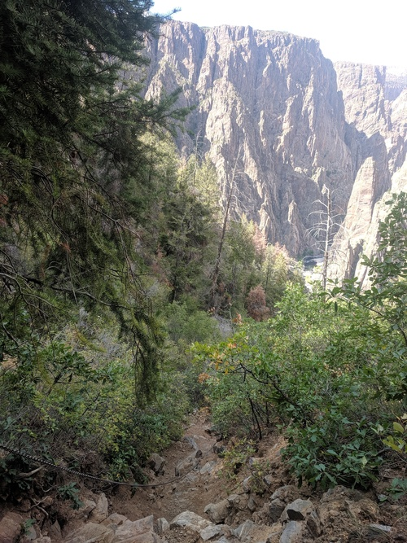
After that, it gets even looser and rockier. I was warned that it can be hard to find your way back, so I took lots of pictures looking uphill with my finger pointing the way.
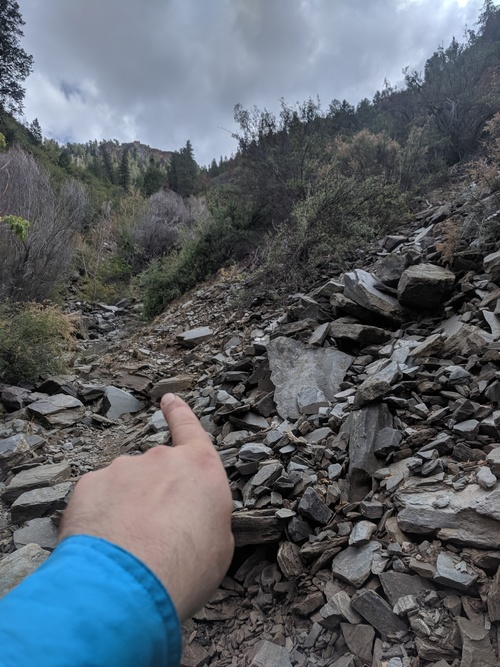
Once I finally reached the bottom, I literally patted myself on the back for the first time in as long as I can remember.
Being down on the floor is surreal. The exposed rock is billions of years old. I couldn't properly capture the awesomeness with a picture, but this fish eye view is pretty good.
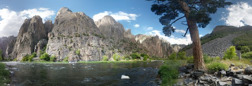
I had the whole place to myself.
The entire canyon is Gold Metal trout water, and I wasn't dissapointed. In about two hours, I fished along the bank, covering roughly 100 yards. I didn't want to risk wading in the strong current, but there were tons of good pools within reach from shore.
I got about five hits, hooked two, and landed one. The other shook off right as I was reaching down to pull him out.
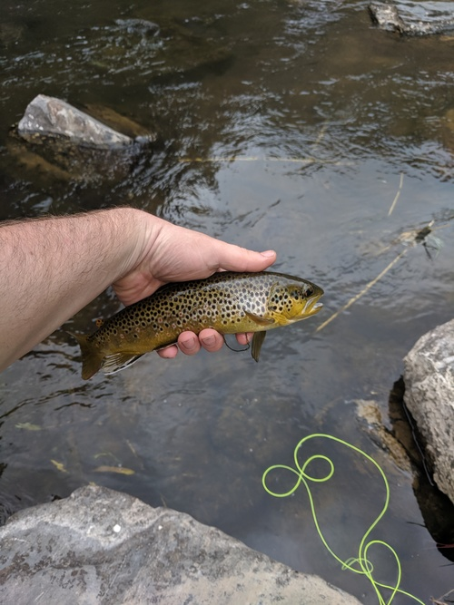
The sun sets quickly in the canyon. Some parts only see direct sunlight for 30 minutes of the day. So I made camp, ate far away from it, and packed up for the night.
The next morning, I fished briefly while my water for the day was being iodized, but had no luck. I didn't want to linger; I could see the sun coming up and I wanted to hike in the shade if possible.
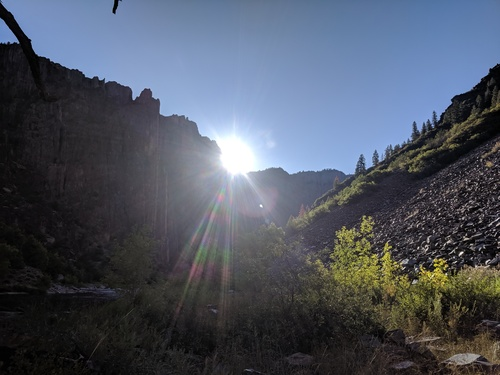
The climb out was easily the most brutal hike I've done in a decade. The pictures I took to guide my was didn't mean a hill of beans, so it was up to me to navigate the scramble back up to the chain.
Fortunately, I met a couple hikers on the way, so I didn't get lost. There was one time where I found myself on the wrong side of a rockslide, but I heard the other hiker and he waved me over. Scrambling across those rocks may have been the riskiest thing I've done this summer, but I made it without causing a rock avalanche, and from there the trail was clear.
When I finally reached the top, I found a little fenced off viewing area. That fence had been my main landmark on the climb up, and I felt very attached to it.
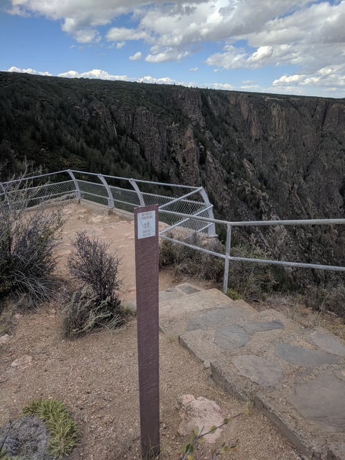
My goal for the day was to get to Telluride, and I had previously entertained thoughts of doing a ride. After three straight leg days, I decided I wasn't going to try to get in a ride. I wanted to get my entrance fee's worth at Black Canyon, so I drove around the sightseeing loop and got some pictures.
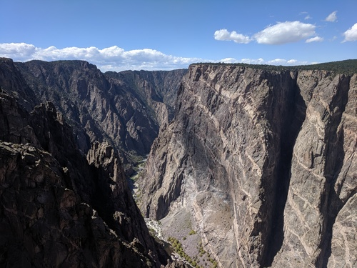
After 24 hours of peanut butter sandwiches, I was ready for some real food. Once I got down the hill, I stopped at Mi Mexico in Montrose.
Telluride
The view of the San Juan range in the skyline had been tempting me since I first quit my job and headed east. As I was driving towards Grand Junction in the Utah twilight, I saw the snow-capped sierra in the distance and my jaw dropped.
Now, in Montrose, I was finally pointing my truck towards that range.
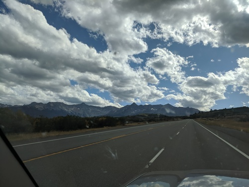
I figured my best bet would be to high tail it to Alta Lakes Campground, a destination I had picked out for my first night in Telluride. This was going to be the most challenging offroading for the truck thus far, and I wanted to hit it with plenty of daylight in case I bailed or had to get myself unstuck.
On the way in, I saw lots of people fishing the San Miguel River along the side of the 145. I had heard this was one of the better streams around Telluride. I didn't want to stop, but I will definitely check it out another time.
The drive was easy enough. There was even a little Suburu and RAV4 that seemed to be doing fine.
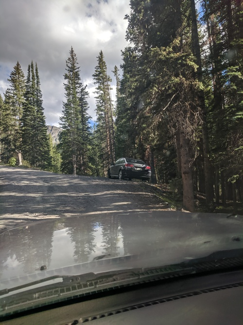
Aside from a few rocky sections where you had to watch the sidewalls and pumpkin, it was a pretty standard forest road. I made it up in second gear without limited slip and I didn't spin either of my stock tires. The drive climbs fairly steeply, with excellent views to the right at the beginning.
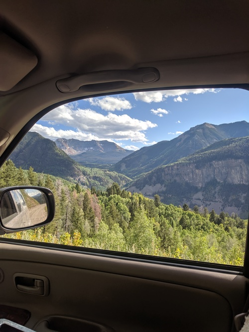
On the drive you pass through the ghost town of Alta. Not a whole lot to it, but kind of cool.
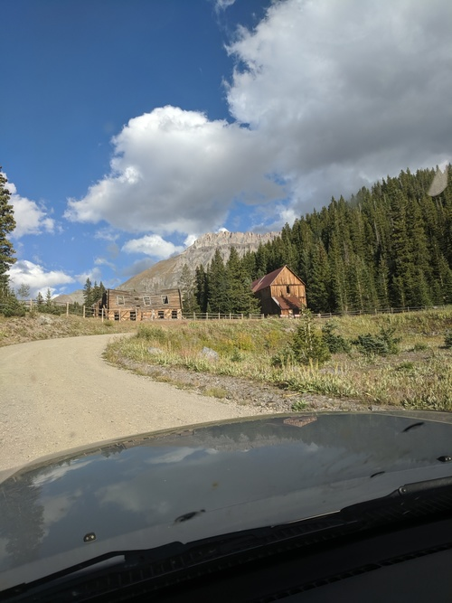
The campground was beautiful, and even had some Port-O-Potties, a luxury for a dispersed campground. It sits at around 11,000 feet, and sports a trio of alpine lakes. At the top of the back bowl of the main lake, where the campground is located, you can just make out the out of bounds markers for the Bald Mountain ski area.
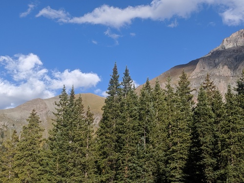
I got in around five, and not a moment too soon: lots of the prime spots were taken, and there were only a handful of good ones left. I saw some offroaders turn away shortly after I arrived.
Since I had some time to kill, I figured I'd toss some spoons in the lake.
After just a couple casts, I landed a healthy, gorgeous rainbow. Unfortunately, I didn't get a pic. The treble hook got him in the eye as well as the upper lip. It wasn't good. As soon as I got it out, he went back in the water. He was pretty messed up, but swam off. In retrospect, I probably should have put him out of his misery and had a nice supper, but the optimist in me thinks he'll do just fine. I've been sticking to catch and release, since I'm fishing nothing but wild trout.
I managed to hook another, but he jumped right away and shook off.
Later on, I was swimming the spoon about 30 feet out, and a big rainbow jumped clear out of the water right under my rod tip. Damn near jumped out of my Chocos. Didn't manage to catch that guy.
All told, it was good fishing for a lake that didn't advertise it.
Shortly thereafter, satisfied that I hadn't been skunked, I packed it up and got ready to wind down.
It was pretty cold up there, and I wanted to wear some socks. I had been discussing with my friend how the preferred Chaco model with toe straps makes it hard to do this, but I had an epiphany that the toe hooks are optional.
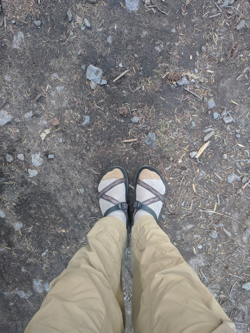
The next day was going to be the capstone of this trip: I was going to camp right in the Town Park so I could enjoy the town after a day of riding.
I got down to the camp park around 10:45, and check out is 11. The spots are all first-come first-served, and it was really hard to find one. Fortunately, one of the campers who saw me driving in circles pointed out an open spot in the back. It had been booked for the day, but the couple had clearly left early, so they sold it to me.
My camping neighbor across the way was setting up shop as well, and it turned out we both wanted to ride the downhill and freeride trails at the ski resort. We were both glad to ride with a buddy, so we rode off to town together. He is a really cool guy: he'd been a ski bum for years, but for the last five years or so has been living out of his van with his girlfriend biking, climbing, and skiiing.
The setup in Telluride is awesome: there is a free gondola that runs from the town up to the ski resort all day until midnight. Up at the resort, we bought lift tickets for the downhill trails, and took Chair 4 up.
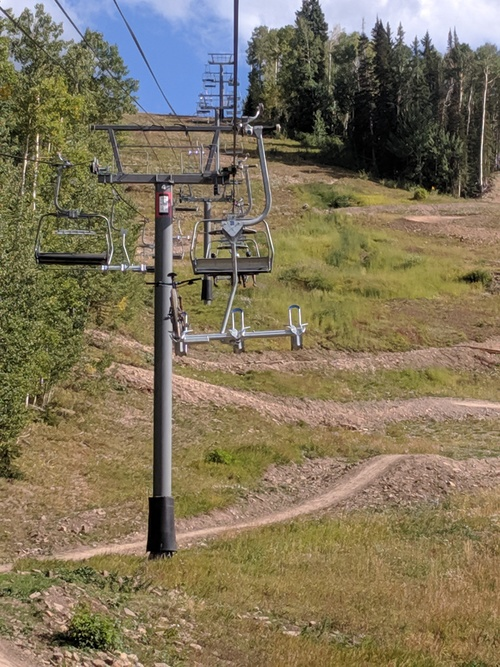
It looks like this is the easier part of the mountain during ski season, but this is where Telluride decided to cut their new mountain bike trails, which opened this year. For a brand new bike park, it was really well done, though there were still some unfinished trails.
We got up the mountain around 12:45, and got in a half dozen good runs. We started off riding the flowly, jumpy blues, which reminded me of a smaller version of Whistler's A-Line. After that, we graduated to a more downhill oriented blue, and then tried out some of the blacks.
We briefly considered trying the lone double black, but it was too steep and gnarly for us with our enduro bikes and no full-face helmets. The blacks ended up being just what we were looking for in terms of challenge, and with a little finesse we both cleared all of the hard sections.
At this point, my buddy went back to town to do a hike with his girlfriend. I grabbed a bite at one of the village cafes, and went back up for a couple more runs before last chair. This was my fourth leg day in a row, and I was feeling it. My hands were also not used to the rigors of downhill riding.
So I decided to just cruise the easy way down, which was actually a ton of fun. It is a fast and flowly trail, meandering back and forth across the ski area.
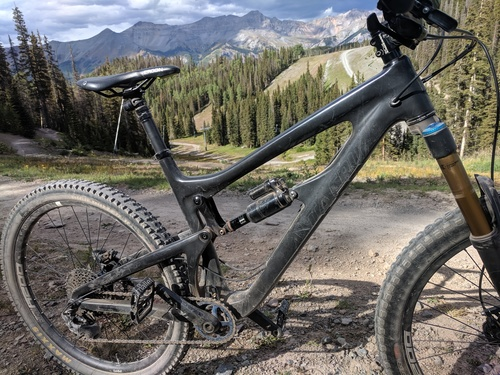
After the ride, I went into a bar at the village for some beer. The guy who had been the server at the lunch cafe happened to come in and sit right next to me, so we got to chatting.
He had been a ski bum for a few years, living out of his van. He had a lot of good tips, both for van life and ski bumming.
He recommended Windy Nation for cheap, durable solar panels, and said not to worry about getting fancy batteries and instead just get good automotive ones and replace them as they wear out. He also recommended a top loading fridge for when I graduated from my cooler, since they are low-profile, and if you happen to let it thaw, you won't get water everywhere.
He also gave me tips about living in a mountain town. There are good Facebook groups for finding apartments and whatnot (Telluride Sweet Deals). Apparently if you work for the ski company, you can get subsidized housing. It's not great to have your boss in a position where he can evict you, but it's a good stop gap if you need housing right away. Apparently being a lifty is the worst job, which makes sense, and if you apply for one of those, you start the next day and they hand you keys to an apartment.
After he had to get back to his shift, I headed back to town.
Another one of the campers at Town Park had mentioned Appalachia Rising was playing at the Sheridan Opera House, the main music venue in town. I didn't find that guy, but I headed over there by myself. I wandered up at 7:40, twenty minutes before doors. Apparently they only had four tickets left, so this was none too soon. That was the first time I've ever lined up for a show.
There was an old guy who was lined up in front of me that looked like he might live in a makeshift cabin in the woods. His first words were "I don't go out much". We got to talking, and he told me stories about Telluride back in the '70s, before the trust fund babies showed up. Apparently there were a lot more music venues back then, and it was a happening scene. He said he saw Jorma Kaukonen from Jefferson Airplane and Hot Tuna play a show where the wooden floor was bouncing a foot up and down. Aside from that, apparently the basement of the Sheridan used to boast hot tubs, connected to the rest of town via tunnel. In fact, there was a whole network of tunnels from the prohibition days.
Once the doors opened, we acquired the first two of the four tickets, and went inside. We had an hour or so to kill, so I got a beer.
I'd seen Rising Appalachia once before, but this was a new configuration: the two sisters were supported by a percussionist, bass and baritone guitar player, and a fiddler. The show was a good mix of soft ballads and roudy foot stompers. They concluded with an encore of Cumberland Way??? which the fiddler supported with the melody from Carry Me Back to Virginia.
Satisfied with my night on the town, I wandered back to the Town Park to sleep.
As far as a living situation, Telluride seems excellent. The setting is truly majestic.
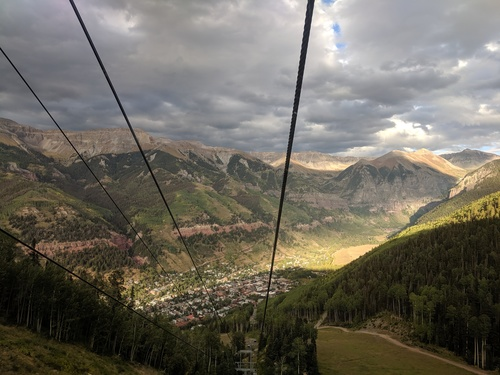
The ski bum I had talked to said it is not yet as yuppified as Aspen or Vail, but it will be soon. There is definitely a lot of money. As far as mountain biking, fishing, and skiing, it has everything you could desire. I think the Sheridan gives it a leg up over Crested Butte in the live music department.
Ouray, Silverton, and Durango
With my activities all complete, I had a day of driving ahead of me to meet up with Grand Canyon friends in Kanab, Utah. Instead of heading directly there, I wanted to do one last sightseeing tour in the San Juans. I headed out from Telluride, back to Ridgway and south on the 550 towards Ouray. This goes straight through the gut of the epic San Juan range, which might be my favorite mountain range yet.
I had gotten a tip from a guy at a Phish show to check out Ouray, and I know my dad loves Durango, so my plan was to drive the 550 all the way down through both.
I didn't stop to check out Ouray, but it is just like Telluride: nestled up against epic peaks with good biking and fishing all around.
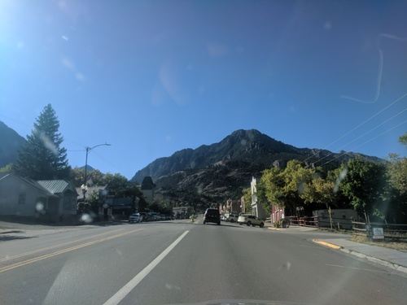
From Ouray to Silverton is the famed Million Dollar Highway, which apparently cost a million dollars a mile to cut into the hillside. The climb out of Ouray was the first time my palms have sweat while I was behind the wheel.
After that, the road winds through beautiful country, and over a couple passes into Silverton. This is a little mining town, with not a whole lot going on.
I continued on, about 70 miles, to Durango. The road flattened out, and the mountains started to transform into more of a high desert. I stopped in Durango for a quick bite, but didn't stick around long. It seems like a fairly large city compared to Telluride or Ouray, and it has a vibe similar to Bishop. I'm sure there is great riding and fishing there.
Cortez to Kanab
The final leg of my journey brought me through Cortez in Southwestern Colorado, through Northern Arizona, and finally into Southern Utah. I went straight through Four Corners, and took a break to take a leak and see the lines in the sand.
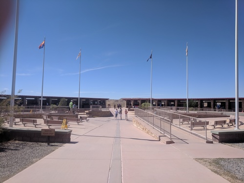
After that, the drive was pretty uneventful. It was kind of like Kansas: flat and straight, but the red rocks and mesas in the distance made it much more exciting.
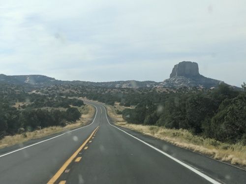
I had an audio issue along the way. A couple days back, the tape deck device I was using the play my phone crapped out, so I had been listening to the same two CDs: an instrumental fiddle disc I'd picked up at Patrick Ross' festival, and Led Zeppelin, which I'd snagged at Walmart when we were stocking up for Lockn'. The stark constrast of a fiddle classic going into Good Times Bad Times was pretty entertaining, and I didn't get bored.
The night before, I picked up a CD from the Rising Appalachia merch booth. When I went to feed it in, I managed to jam the disc changer in the cold mountain morning, so I was stuck with radio. In the middle of nowhere Arizona, I had a hard time finding a good channel. Sometimes all I could get was public radio, sometimes it was just a Christian Rock station. I could have played my phone off its own speaker, but messing with the radio kept me entertained.
As I passed Lake Powell and started approaching Kanab, I noticed something interesting: almost every car on the road had California plates. This was nice, it made me feel like I was heading back towards my neck of the woods.
Around sunset, I pulled in to Escobars in Kanab, and wrote this post while I waited for my friends.